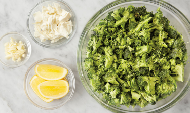
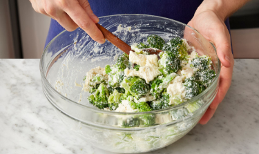
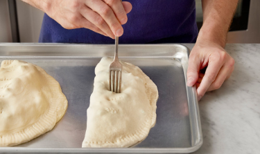
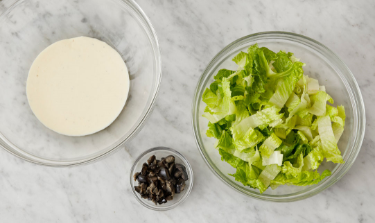
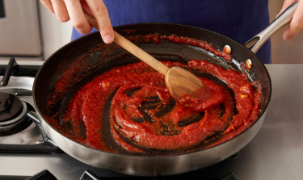
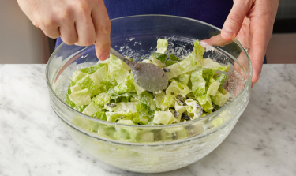

Broccoli & Mozzarella Calzones
with Caesar Salad
These calzones are loaded with melty fresh mozzarella, creamy ricotta, and tender broccoli—balanced by a tangy tomato dipping sauce. For a refreshing side, weʼre tossing crunchy romaine and briny black olives in our take on Caesar dressing.
- 1½ lbs Pizza Dough
- 3 cloves Garlic
- 1 Romaine Lettuce Heart
- 1 lb Broccoli
- 1 cup Part-Skim Ricotta Cheese
- 1 8-Ounce Can Tomato Sauce
- ½ lb Fresh Mozzarella Cheese
- ¼ cup Grated Parmesan Cheese
- 2 oz Black Cerignola Olives
- 1 Tbsp Italian Seasoning (Whole Dried Basil, Sage, Oregano, Savory, Rosemary, Thyme, & Marjoram)
- 1 Lemon
1
Prepare the ingredients
Remove the dough from the refrigerator to bring to room temperature. Place an oven rack in the center of the oven, then preheat to 475°F. Wash and dry the fresh produce. Cut off and discard the bottom 1/2 inch of the broccoli stem, then roughly chop the broccoli. Peel and roughly chop the garlic. Tear the mozzarella cheese into small pieces. Quarter and deseed the lemon.
2
Cook the broccoli & make the filling
In a large pan (nonstick, if you have one), heat 2 teaspoons of olive oil on medium-high until hot. Add the chopped broccoli; season with salt and pepper. Cook, stirring occasionally, 4 to 6 minutes, or until lightly browned. Add 2/3 of the chopped garlic. Cook, stirring constantly, 30 seconds to 1 minute, or until fragrant. Add 1/4 cup of water; season with salt and pepper. Cook, stirring occasionally, 2 to 3 minutes, or until the broccoli has softened and the water has cooked off. Transfer to a large bowl. Add the mozzarella cheese, ricotta cheese, half the Italian seasoning, and the juice of 1 lemon wedge; stir to combine. Season with salt and pepper. Wipe out the pan.
3
Assemble & bake the calzones
Lightly oil a sheet pan. Divide the dough into 2 equal-sized portions; using your hands and a rolling pin (or wine bottle), gently stretch and roll the portions into ¼-inch-thick rounds. (If the dough is resistant, let rest for 5 minutes.) Divide the filling between the centers of the rounds; fold each round in half over the filling. Using a fork, crimp the edges of the dough to seal. Transfer to the sheet pan. Using a fork, poke a few holes across the tops of the calzones to vent. Lightly drizzle the calzones with olive oil. Bake 16 to 18 minutes, or until golden brown. Transfer to a cutting board and let stand for at least 2 minutes.
4
Prepare the remaining ingredients
While the calzones bake, using the flat side of your knife, smash the olives; remove and discard the pits, then roughly chop. Cut off and discard the root end of the lettuce; roughly chop the leaves. To make the dressing, in a large bowl, combine the mayonnaise, half the parmesan cheese, the juice of the remaining lemon wedges, and a drizzle of olive oil. Season with salt and pepper to taste.
5
While the calzones continue to bake, in the pan used to cook the broccoli,heat 2 teaspoons of olive oil on medium-high until hot. Add the remaining chopped garlic; cook, stirring constantly, 30 seconds to 1 minute, or until fragrant. Add the tomato sauce and remaining Italian seasoning. Cook, stirring frequently, 2 to 3 minutes, or until slightly thickened. Turn off the heat and season with salt and pepper to taste.
6
Make the salad & serve your dish
Just before serving, add the chopped olives and lettuce to the bowl of dressing. Toss to coat; season with salt and pepper to taste. Cut the baked calzones in half. Serve with the sauce and salad on the side. Garnish with the remaining parmesan cheese. Enjoy!